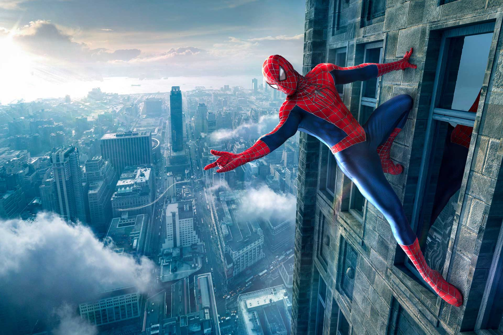
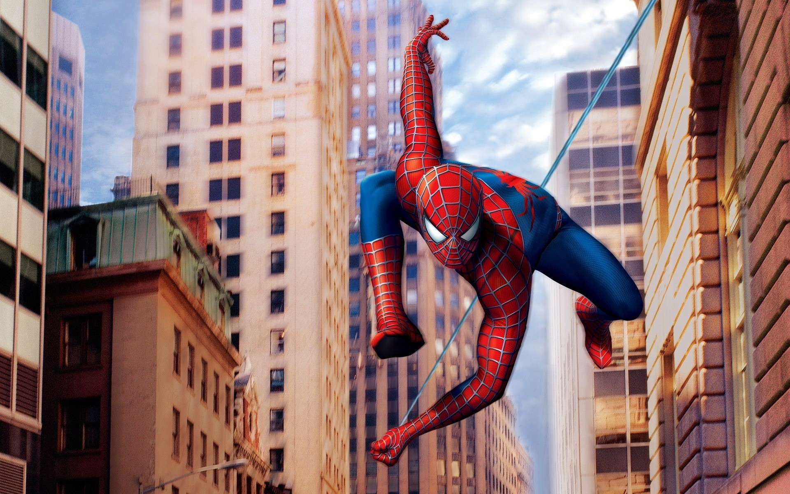

Характеристика:
Питер был скромным ботаником и таковым бы и остался, если бы не укус паука.
Став Человеком Пауком, у Паркера появилось множество способностей среди которых: чутье — которое помогает ему предвидеть опасность; карабканье по стенам; огромная сила; ловкость; выносливость. Раны на теле Питера заживали очень быстро.
Благодаря магии Доктора Стрэнджа, личность Паука не возможно было раскрыть, до тех пор по Питер сам в этом не признается.
Несмотря на суперспособности которые получил Паркер, он был очень хорош в физике и химии, обладал гениальным умом, был прекрасным изобретателем.



История:
Питер сын Мэри Паркер и Ричарда Паркера, ученого, который работал на ЩИТ.
Сотрудничая с докторами Генри Пимом, Франклином Штормом и Брюсом Беннером Паркер старший случайно спровоцировал взрыв в лаборатории. Образовавшееся излучение превратило доктора Брюса Беннера в Халка, он потерял контроль над собой и стал крушить все вокруг.
Человек ПаукВ это время к научно-исследовательскому институту приехала молодая миссис Паркер с ребенком. Муж выбежал предупредить её об опасности, но не успел, и они оба погибли по вине разбушевавшегося Халка.
Увидев, что он натворил и выжившего младенца, Халк вернулся в человеческую форму, и сдался ЩИТу под арест.
Ник Фьюри отнес Питера Паркера его единственным родственникам дяде Бену и тете Мэй. Питер не мог помнить, что случилось с его родителями, поэтому с детства ему решили говорить, что они погибли в автокатастрофе.
Питер рос стеснительным, но очень умным парнем, был круглым отличником, поэтому постоянно терпел издевательства со стороны школьных хулиганов.